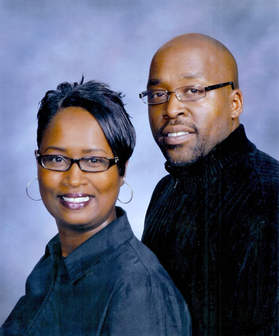

Recognized as the oldest African-American church in the city of Tracy, Good News carries nearly eight decades of ministry, leadership, and the gospel of Jesus Christ.

"But my life is worth nothing unless I use it for doing the work assigned me by the Lord Jesus, the work of telling others the Good News about God's wonderful kindness and love." Acts 20:24 (NLT)
Pastor Tyrone L. Morrison II was born and raised in Los Angeles, California. He accepted Jesus Christ into his life and was baptized at Greater Faith Baptist Church at the age of eight by the late Pastor Joseph Tillman, Sr. He has served the Christian community most of his life.
Pastor Morrison received his formal education from the Los Angeles School Districts. He continued his secondary education at U.C. Berkeley, Piedmont Theological Seminary, and the Good News Theological Seminary.
In 1993, Pastor Morrison was ordained as a Deacon at the Mount Calvary Missionary Baptist Church in Oakland, California, under the leadership of Pastor Dennis Meredith, and served in that capacity for ten years. But God had a greater calling on his life. In April 2003, Pastor Morrison accepted his calling to preach the gospel and was licensed at Victory Baptist Church in Oakland under the leadership of Pastor Jewel Peters. In 2005, he was ordained at the Stars of Joy Missionary Baptist Church by Pastor Elijah Baker, and served faithfully as an Associate Minister.
In 2011, Pastor Morrison moved to Tracy, California, and united with the Good News Missionary Baptist Church under the leadership of Pastor B. Carl Edwards, where he served faithfully as an associate pastor and minister.
On March 3, 2018, after much prayer and consideration, Rev. Morrison accepted the call to be the Senior Pastor of the Good News Missionary Baptist Church and was installed as the new Pastor that same month.
Pastor Morrison has been employed by the University of California for more than thirty years. He is blessed to be married to Doretha Morrison for twenty-six years, and to father three sons: Jerome, Tyrone III, and Dorian.
From a Sunday afternoon in a living room on West 3rd Street, to the oldest African-American church in the city of Tracy. Here is how the Lord has carried us.
The late Reverend Ealis Sallie came to Tracy with a conviction in his heart to organize a Missionary Baptist Church. On Sunday, December 7, 1947, Rev. Sallie held the first service in the home of Horace and Mamie Anderson at 111 West 3rd Street with five people in attendance.
On December 14, 1947, the members agreed to the name "Rock West Missionary Baptist Church." A few weeks later, Reverend Ealis Sallie was elected as the church's first pastor. Sis. Mamie Anderson was asked to serve as Secretary and Treasurer.
After approximately one year of services in the Anderson home, land was purchased at 77 West First Street, the address Good News still calls home today. Construction soon began on the church building.
On March 15, 1979, Rev. Ealis Sallie was called home. He had served as the only pastor of Rock West Missionary Baptist Church for thirty-one years. Reverend Michael Bethea was ordained and accepted the call as pastor on June 27, 1979, and served for two years.
Reverend David L. Jemison accepted the call to pastor on January 3, 1982. He told the congregation that the Holy Spirit had given him a plan to lead, which included changing the name of the church to "Good News Missionary Baptist Church." The name was officially changed on January 6, 1982.
On February 13, 1985, Good News Missionary Baptist Church called Reverend B. Carl Edwards as pastor, and he accepted the call that same evening. He would serve faithfully for thirty-two years.
In June 2003, the church chronicles were placed in the Tracy Historical Museum in an official ceremony. Good News MBC was recognized as the oldest African-American church in the city of Tracy.
The Good News Bible Seminary held its first class in August 2011 under Pastor Edwards' leadership. The seminary has since received its accreditation, continuing the church's commitment to teaching the Word.
After years of faithful giving from the congregation, the church mortgage balance was paid in full in 2013, a milestone of God's provision for the Good News family.
In September of 2017, after thirty-two years of faithful service, Rev. Dr. B. Carl Edwards retired. On March 3, 2018, after much prayer and consideration, Rev. Tyrone L. Morrison II was called to be the pastor of Good News Missionary Baptist Church, and his ministry continues today.
The story of Good News is still being written. There is a seat for you this Sunday at 9:00 AM Sunday School or 10:30 AM Worship.
Plan Your Visit